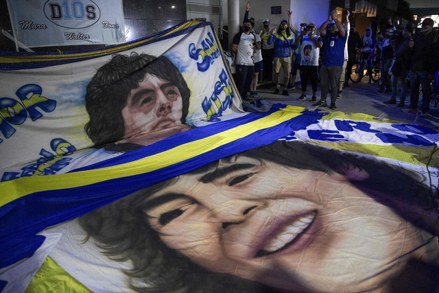

Buenos Aires. El astro del futbol Diego Maradona se encuentra en "excelente" estado y descarta
dejar Argentina para realizar la recuperación en Venezuela o Cuba, tras la intervención de
urgencia realizada el lunes por un hematoma en la cabeza, dijo el abogado del ex futbolista,
Matías Morla.
"El último parte médico fue excelente. ¡Mucha fuerza y vamos a salir adelante!", señaló Morla a
los periodistas a la salida de la clínica ubicada en los suburbios de Buenos Aires.
El abogado de Maradona señaló también que "Diego tiene la cabeza en Gimnasia", el club al que
dirige desde 2019, y descartó las versiones que indicaban la posibilidad de que fuera a realizar
la recuperación fuera de Argentina.
"Diego ama Cuba, ayer hablé con el hijo de Fidel Castro. Tanto Venezuela como Cuba son países
amigos para que Diego esté, pero Diego está con la cabeza en Gimnasia", apuntó Morla a los
periodistas.
Maradona, de 60 años, fue operado el lunes por la noche en la Clínica Olivos, donde un equipo
encabezado por su médico personal Leopoldo Luque "evacuó el hematoma de manera exitosa", de
acuerdo al primer informe entregado cerca de la medianoche.
